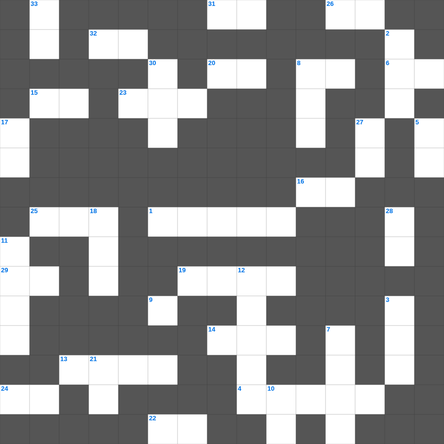

십계명 (후반부)
📌 서비스 정의
십자가로세로는 교회 주보와 주일학교에서 사용할 수 있는 성경 기반 가로세로 퍼즐 서비스입니다. 성경 인물, 사건, 핵심 구절을 바탕으로 제작되었습니다. 온라인 풀이 및 인쇄 기능을 제공합니다.
무료로 즐기는 십계명 십계명 낱말 퍼즐! 35개의 힌트로 구성된 가로세로 낱말 퍼즐입니다. PC와 모바일 모두 지원되며, 정답을 바로 확인할 수 있어 혼자서도 쉽게 풀 수 있습니다.

📝 가로 힌트
1. 엠마오로 가던 두 제자가 예수님을 알아본 시점
4. 예수님이 저주하여 마른 나무
6. 너희가 서로 사랑하면 모든 사람이 너희가 내 이것인 줄 알리라
8. 사랑받는 제자로 불린 사람
9. 첫 번째 재앙: 강물이 이것이 됨
13. 교회는 그리스도의 몸
14. 입다의 고향
15. 예배의 시작을 알리는 종소리나 기도
16. 보냄을 받은 자라는 뜻
19. 요나를 삼켰던 존재
20. 영접하는 자 곧 그 이름을 믿는 자들에게는 하나님의 이것이 되는 권세
22. 불뱀에 물린 자들이 이것을 보면 살았다
23. 향을 피워 올리는 곳
24. 요셉이 보디발의 아내 유혹을 물리치고 간 곳
25. 그런즉 누구든지 그리스도 안에 있으면 새로운 이것이라
26. 여호와 이것: 준비하시는 하나님
29. 발람 선지자를 책망하며 말을 한 동물
31. 예수님이 부활 후 고기를 구우신 숯불
32. 동방 박사들이 드린 세 가지 예물 중 하나
📝 세로 힌트
2. 제물을 통째로 태워 드리는 제사
2. 모든 제물을 태우는 곳
3. 언어가 혼잡하게 된 곳
5. 밤이 없겠고 등불과 이것이 쓸데없으니
7. 빌립이 전도한 제자
8. 예수님이 세례받으신 강
10. 사랑, 희락, 이것
11. 노동자 하루 품삯에 해당하는 은화
12. 노아의 방주를 만든 나무
17. 심령이 가난한 자는 복이 있나니 이것이 그들의 것임이요
18. 제사장이 손발을 씻는 놋 그릇
21. 슬플 때 찢으며 입었던 옷
27. 예수님이 구름을 타고 하늘로 올라가심
28. 70그루 종려나무와 12샘이 있던 오아시스
30. 솔로몬 성전 건축에 쓰인 고급 나무
33. 곳곳에 기근과 이것이 있으리니
🧑🏫 교회 교육 자료 활용
이 퍼즐은 주일학교 교재 추천 자료로 활용할 수 있고, 주일학교 주보에 넣기 좋은 분량으로 구성되어 있습니다. 수업용 주일학교 교안에 활동지로 붙이거나, 예배 후 복습용 주일학교 공과교재로 바로 사용할 수 있습니다.
🏷️ 키워드
십계명 낱말 퍼즐, 십계명, 십자가로세로, 성경퀴즈, 말씀퀴즈, 가로세로퍼즐, 주일학교 교재 추천, 주일학교 주보, 주일학교 교안, 주일학교 공과교재